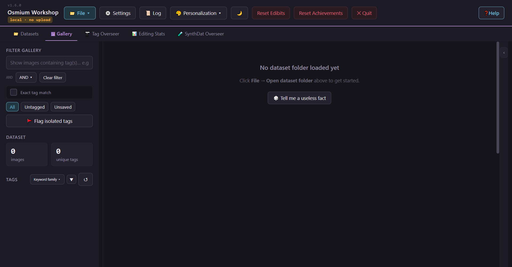
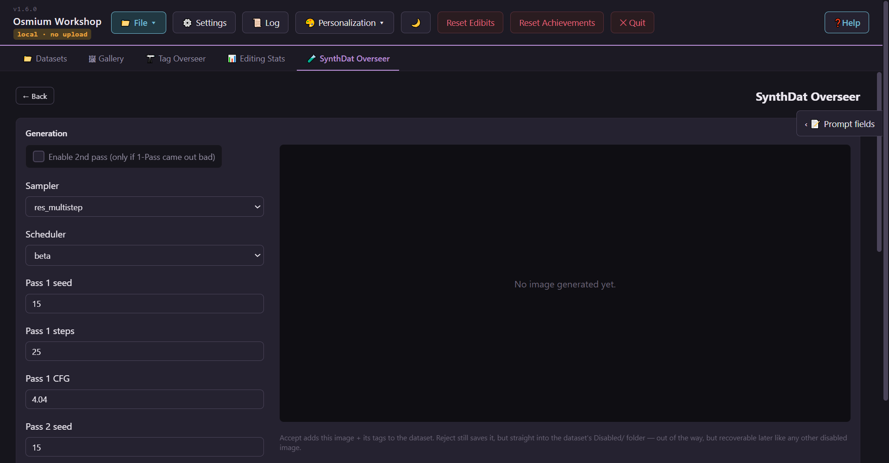

The denser,
the better.
Osmium Workshop is a dataset tag editor for people who'd rather stop hand-editing thousands of .txt files. Bulk tag edits, standing correction rules, WD14 autotagging, ComfyUI sync, all built dense and keyboard-first for datasets in the thousands, not ten.
This is the actual app.
Screenshots, not mockups, pulled straight off a running build. It's dense and keyboard-driven on purpose: you'll be here for thousands of images, not ten.


Try it right here
This is the actual editor, running right in your browser — open a folder with your browser's own file access and try it for real. Works in Chrome and Edge on desktop.
It needs the File System Access API, which Chrome and Edge support and Firefox and Safari don't yet. Download the desktop app instead — it works everywhere.
The tools you'll actually use
All six write to the same edit log. Nothing here silently rewrites your files behind your back.
Tag Pruner — Unify & Void
Pick a handful of spelling variants or junk tags. Merge them into one name, or just delete them. Every pass is confirmed and undoable, so run as many as you need without worrying about it.
Retroactive Merge / Void rules
Set a rule once ("these tags become this tag" or "these tags get deleted") and it keeps applying to anything that comes in later, from WD14, hand typing, or imports. Try to type a tag the rule already caught and it's blocked with a note pointing at the rule. You clean something up once.
WD14 autotagger, on your own ComfyUI
Send one image, or a whole selection, to a WD14 node running on your own ComfyUI. The returned tags get merged straight in. Host, model, and thresholds all live in one settings panel, and you can turn on review-before-apply if you don't trust it yet. Osmium doesn't ship a model of its own; ComfyUI does the actual work.
SynthDat Overseer — grow a thin dataset
Only have five good images of a character? Generate more, ControlNet-posed off one reference. It pulls pose tags from the reference automatically, runs a 1- or 2-pass generation, and shows you the result before anything's written. Accept puts it straight in the dataset; Reject parks it in Disabled instead of throwing it away.
Undo/redo, and a real edit log
One tag, one merge, one mass rename: it's all undoable, globally or one entry at a time, and it's all written to a per-folder _tag_edit_log.json. Reset a single image if you botched it, or go back through the whole session later and see what you actually did.
Master Tag Control — bulk passes
Checkbox-select any slice of the gallery and apply, remove, or conditionally apply tags across all of it. Rename or find-and-replace dataset-wide, or delete the selection outright. Anything you've locked or marked merge-immune just sits out, no extra clicks needed.
One repo, three apps
They share the same renderer code and file conventions, so a folder tagged on desktop opens the same way on your phone.
Osmium Workshop — Desktop
Everything shown on this page. Portable Electron app for Windows: unzip it, run it, that's it.
Osmium Workshop — Mobile
Android port for tagging on the go. Touch layout, on-device WD14, ComfyUI generation over LAN or Tailscale. Sideload the APK from GitHub Releases; it's not on the Play Store.
Comfy Bridge
A simpler ComfyUI web UI with one built-in workflow, for when you just want the image without wrangling a node graph. Desktop and Android.
Get the current build
v1.6.0, portable Windows build. No installer, no account. It doesn't make a single network call unless you point it at your own ComfyUI.